The slide of the lecture is on the left, the same figure or table on the right, computed in the browser from the same data. The ▶ button moves the parameter step by step; the “Worked example” boxes redo the solutions of the exam problems with the numbers of the chapter.
Box–Jenkins from start to finish: Romanian inflation · The exam
Box–Jenkins from start to finish: Romanian inflation
Step 1: the data
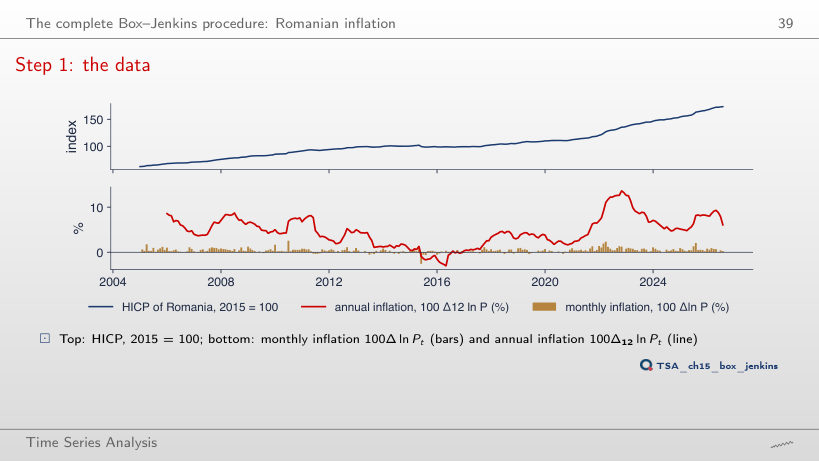
Answer
It falls from 0.52% (2005–2010) to 0.31% (to August 2020), then rises to 0.39% over the whole sample: the 2021–2023 inflation wave and the 2025 tax shock raise the mean. The minimum of annual inflation, −3.0% in May 2016, has the June 2015 VAT cut on food inside its 12-month window; the maximum, 13.6%, is in November 2022.
Interpreting the data
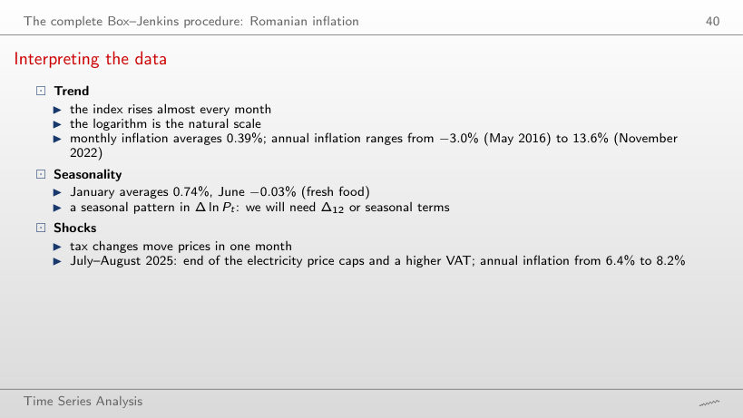
Answer
No: since 2020 June averages +0.28%, and January remains the highest month (0.94%). The seasonal pattern (January high, June low) survives, but its level rises with the general inflation of 2021–2023; this is why the model works with Δ12, which removes both the level and the fixed seasonality.
Step 2: unit-root and stationarity tests
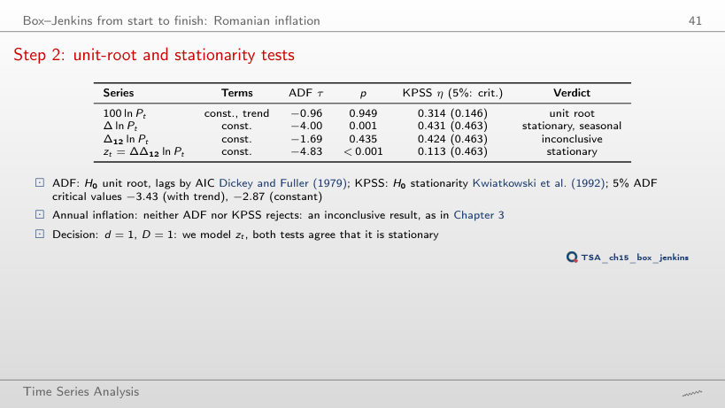
Answer
Unit root: ADF does not reject (p between 0.66 and 0.97) and KPSS rejects (η between 0.59 and 1.48, above 0.463). The inconclusive result of the lecture appears only after 2022, when the inflation wave adds variation. In the same years Δ ln P gets “conflicting”: both tests reject, because the seasonality and the level shifts of monthly inflation violate the assumptions of both tests.
Step 3: identification from the correlogram of zₜ
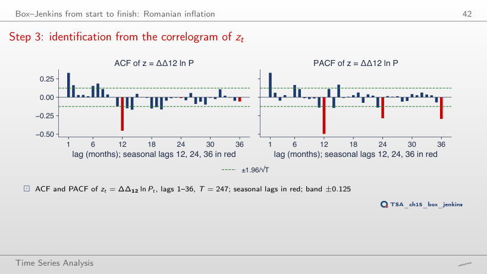
Answer
0.25, 0.22 and 0.18, all above the ±0.12 band and decaying slowly: the seasonal pattern has not been removed, so Δ12 is needed. For Δ12 ln P the ACF starts at 0.98 and decays very slowly (a near unit root); only z = ΔΔ12 ln P has a single large seasonal value, −0.45 at lag 12.
Interpreting the correlogram
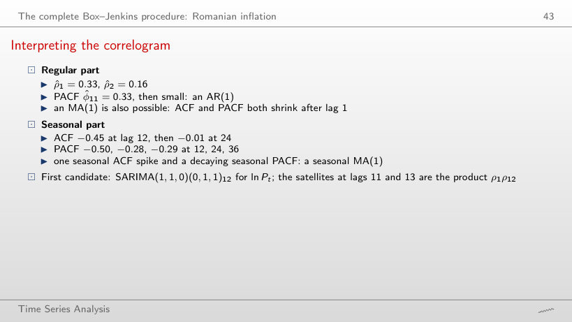
Answer
−0.49 = Θ/(1 + Θ2) = −0.867/1.752. A seasonal MA(1) has a single nonzero seasonal autocorrelation, at lag 12, and its size cannot exceed 0.5 in absolute value; with φ = 0 the satellites at 11 and 13 vanish. With φ = 0.416 they are about φ · ρ12, and in the sample ρ̂11 = −0.12 and ρ̂13 = −0.15, close to the product ρ̂1ρ̂12 = −0.15.
Step 4: estimating the candidates
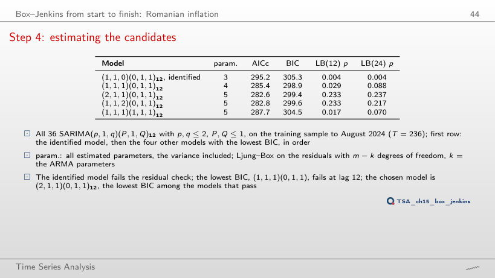
Answer
(2,1,1)(0,1,1)12, the chosen model itself. With c = ln 223 = 5.41 (BIC) the winner is (1,1,1)(0,1,1)12, which has one parameter less but fails the Ljung–Box test at lag 12 (p = 0.029); from c ≈ 5 upward it stays first. The chosen model does not change for any c in the chart, because it is the best of the models that pass the checks.
Step 4: the chosen model
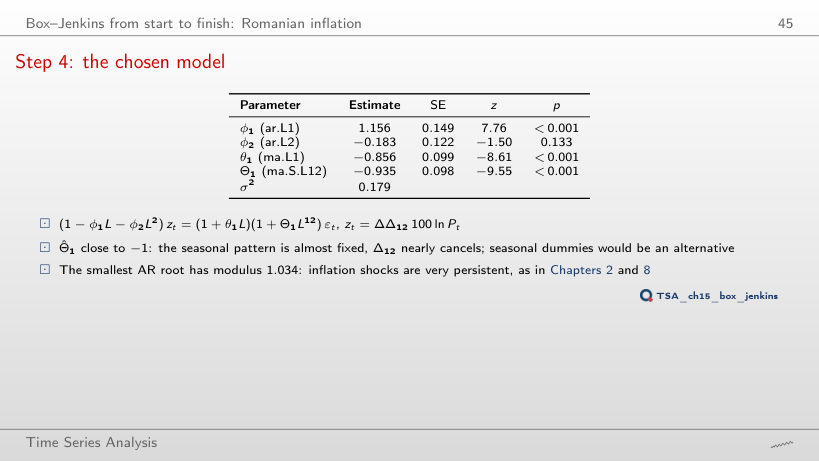
Answer
(2,1,1)(0,1,1)12, with modulus 1.034 (inverse 0.967), followed by (1,1,2)(0,1,1)12 with 1.035. The identified model has a single AR root, 2.40: an AR(1) with φ = 0.42 cannot reproduce the persistence of inflation. The seasonal MA roots all have modulus close to 1 (1.006): Θ1 ≈ −1 nearly cancels Δ12.
Step 5: checking the residuals
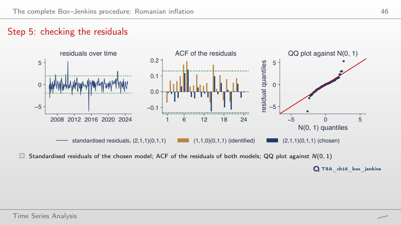
Answer
None: the kurtosis stays between 9.5 and 10.0 and Jarque–Bera between 390 and 454. Extra AR and MA terms remove autocorrelation, not outliers: the residuals of June 2015 (−6.1σ) and July 2010 (5.3σ) come from VAT changes that no univariate model can foresee.
Interpreting the residual checks
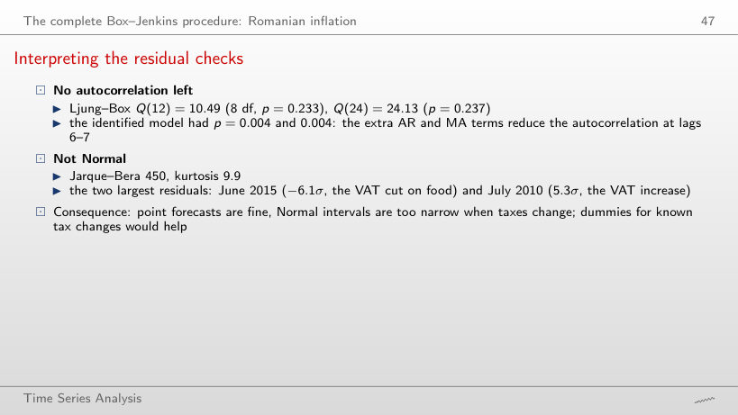
Answer
No: p = 0.025 at m = 7 and p = 0.048 at m = 8; at every other lag, 12 and 24 (those of the lecture) included, p > 0.05. The identified model fails at every m from 6 to 36. Tests at several lags are not independent: the choice of m flips a borderline verdict, which is why the lecture reports two lags fixed in advance.
Step 6: forecasts
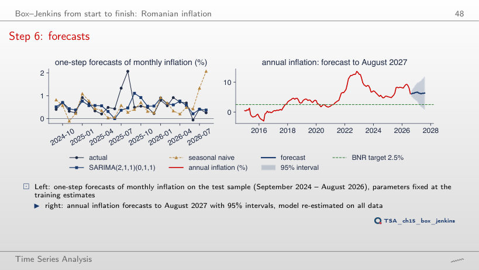
Answer
9.7%, with the 95% interval [3.9, 15.5], which contains the realised value. The model treats part of the July–August 2025 jumps as persistent (AR root 0.967) and cannot know they were one-off tax decisions; over the later origins the 12-month forecast comes down, with ups and downs, to 6.3% from August 2026.
Interpreting the forecasts
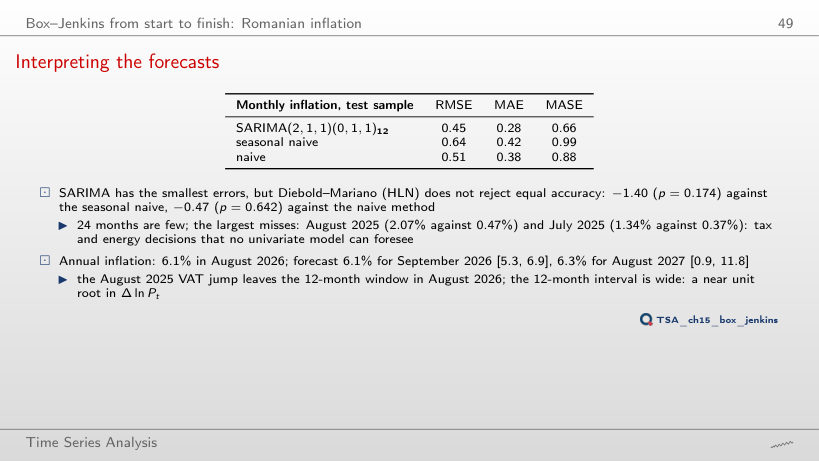
Answer
No: the smallest p is 0.174, at 24 months. With 11 months the statistic even turns positive (0.10), because the large misses of July–August 2025 fall on SARIMA. A smaller RMSE is not a significant difference: on a short sample the variance of dt is large.
The exam
Problem 1: solution
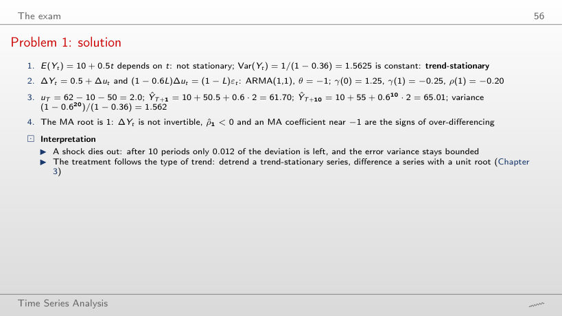
Worked example
Answer
−0.025 = −(1 − φ)/2. Differencing a trend-stationary series gives an ARMA(1,1) with θ = −1; for φ close to 1 the AR root and the MA root nearly cancel and the ACF of ΔY looks like white noise, although ΔY stays non-invertible. With φ = 0 the correlation is −0.5, the value of an MA(1) with θ = −1.
Problem 2: solution
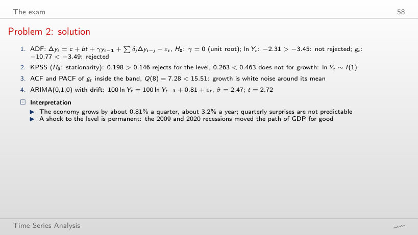
Worked example
Answer
Yes: Q(8) = 4.18, p = 0.841, and the drift is 1.00% a quarter (σ̂ = 2.49). Over the full sample, with 2020 included, Q(8) = 7.28 (p = 0.506) and the drift 0.81%: the 2020Q2 fall lowers the mean but creates no autocorrelation. The ADF test for the level is still not rejected (−2.08 in 2019Q4).
Problem 3: solution
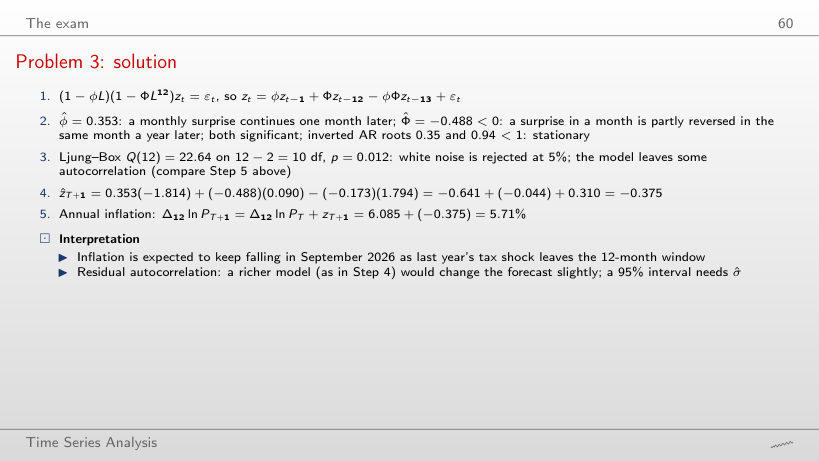
Worked example
Answer
The forecast is z = 0.753 and annual inflation 8.93%; the realised values are z = 0.090 and 8.26%. The term φzT carries the August jump into September, although the jump was a one-off decision. With the origin in July 2026 the forecast for August 2026 is 6.83%, against 6.09% realised: the exit of the jump from the 12-month window is underestimated, because |Φ̂| = 0.49 < 1.
Problem 4: solution
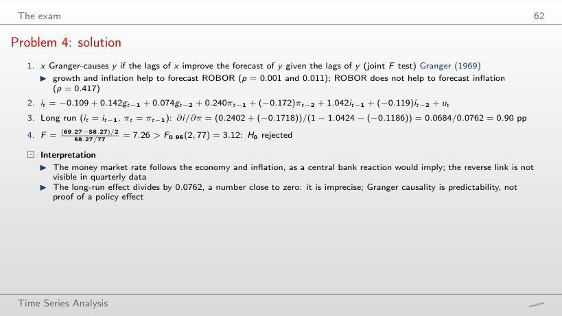
Worked example
Answer
Up to 2022Q4 it stays between 1.06 and 1.32 (1.27 in 2019Q4), then falls to 0.91 in 2023Q4 and 0.90 in 2026Q2. The denominator 1 − bi,1 − bi,2 stays between 0.03 and 0.09, so small changes in the coefficients move the ratio a lot. The Granger test for g → i rejects on every sample (p ≤ 0.008).
Problem 5: solution
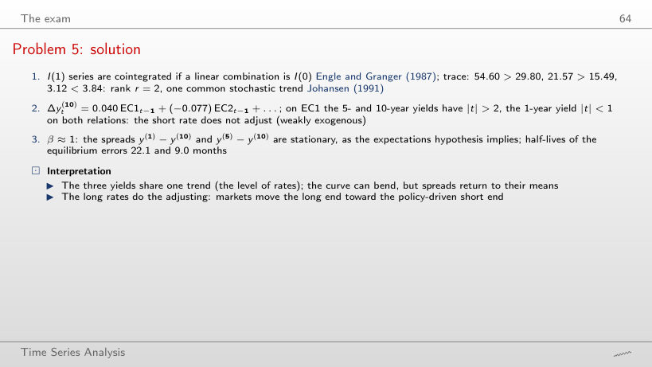
Worked example
Answer
10.9 months, about half: for eigenvalues close to 1, ln λ ≈ −(1 − λ), and 1 − λ is proportional to α. The fast component falls from 9.0 to 4.3 months. With α divided by 4 the half-lives are 89.6 and 37.2 months.
Problem 6: solution
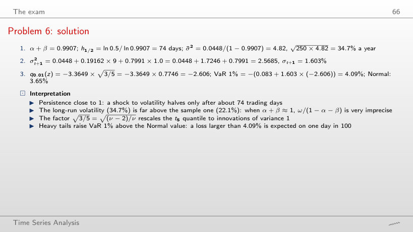
Worked example
Answer
Still 2.5685: GARCH(1,1) depends on εt2, so a 3% rise and a 3% fall have the same effect. The leverage effect needs an asymmetric model (GJR or EGARCH, Chapter 5). With εt = 0, σ2t+1 = 0.844, below today’s variance.
Problem 7: solution
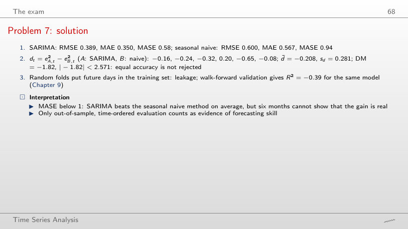
Worked example
Answer
From about 1.35: DM = −2.33 at 1.2 and −2.63 at 1.4, against the critical value 2.571 with 5 degrees of freedom. With six months even a method with 40% larger errors is barely distinguishable; a MASE below 1 is not proof.
Problem 8: solution
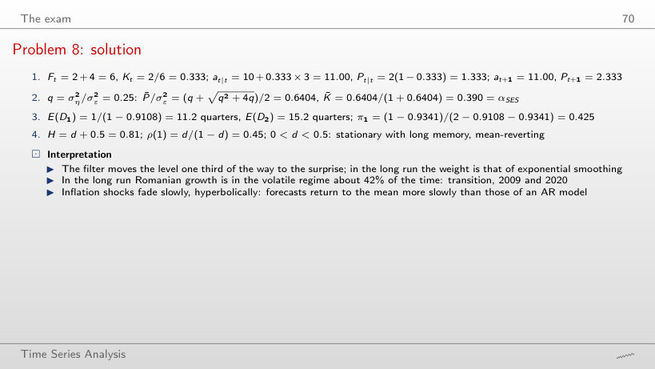
Worked example
Answer
0.618 = (1 + √5)/2 / (1 + (1 + √5)/2). The more the level moves relative to the noise, the more the filter trusts the new observation. The first step stays Kt = 2/6 = 0.333, because it depends only on Pt = 2 and σε2 = 4; the gain then converges to the steady state in a few steps.
The Romanian HICP (Eurostat prc_hicp_minr, 2015 = 100) is read with the chapter’s loader on 4 November 2026 and cut at August 2026, the last month of the lecture; the January 2005 – August 2026 values have not been revised and reproduce the numbers of the lecture exactly. The estimates of the 36 SARIMA models, their residuals and the forecasts come from the chapter’s code (statsmodels SARIMAX). Problem 2 uses Romanian real GDP in the version of the lecture (Chapter 3, read from the chapter’s vector chart because Eurostat has revised the series), Problem 4 the GDP growth, inflation and ROBOR 3M of the VAR of Chapter 6, Problem 5 the US Treasury yields (FRED, to September 2026), Problem 6 the GARCH(1,1)-t estimates of the BET from Chapter 5. The browser computes the correlograms, the Ljung–Box and Jarque–Bera tests, the accuracy measures, the Diebold–Mariano test, the OLS regressions of Problem 4 and the hand computations. Variants that do not appear in the lecture (other sample ends, other forecast origins, other penalties of the criterion, other lags, other parameters of the problems) are extra runs of the chapter’s code on the same data; the charts of “Interpreting the data”, “Step 2”, “Interpreting the correlogram”, “Step 4”, “Interpreting the residual checks”, “Interpreting the forecasts” and of the problem solutions are extra charts for slides that give only numbers.